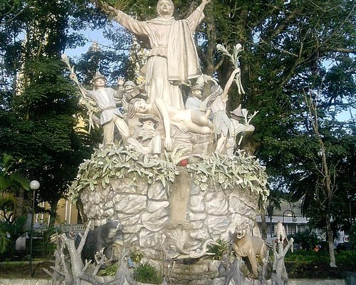
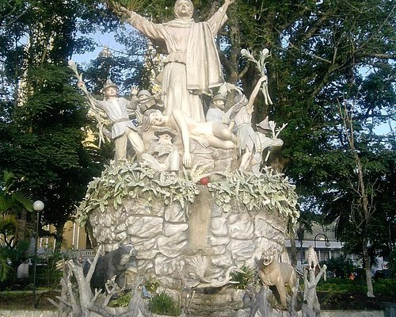
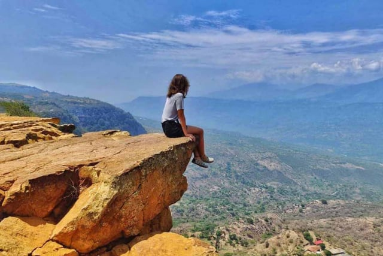
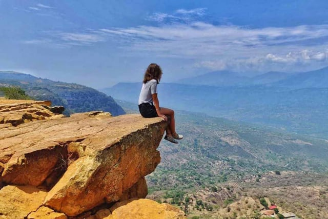

Nosotros
Historia del Municipio
El territorio actual del municipio fue albergue de una tribu indígena comandada por un cacique muisca, los indios que moraban en el caserío y en sus dependencias se llamaban los garaguas. En 1539 cuando el conquistador español Gonzalo Jiménez de Quesada ya habiendo ocupado a Muequetá (actual Funza), tuvo noticias por referencias de los indios del dominio del Zipa de las famosas minas de esmeralda de Somondoco, propiedad del cacique sumindoco. Emprendió la expedición hacia el norte pasando por Guatavita, Sesquilé, Chocontá y Turmeque. En esta población Jiménez de Quesada permaneció algunos días y desde aquí envió al capitán Pedro Fernández de Valenzuela a que tomara nota precisa de la joya tan codiciada por los españoles. Fernández regresó trayendo un informe favorable. Quesada partió en busca de las minas y tropezaron en el camino con algunos poblados indígenas como Boyacá, Tibaná y Tenza. De allí se encaminaron finalmente a Garagoa y Obeita, donde hicieron alto, por encontrarse cerca de las minas de esmeralda. Virreinato En 1556 arribaron los padres Dominicos e iniciaron la difusión de la religión Católica. En 1604 se instauró en Somondoco el primer resguardo del Valle de Tenza y los grupos indígenas de los teguas, chirimitas y guanecas, fueron adscritos a Garagoa. En 1635 se tiene la primera referencia de la encomienda de Garagoa, con 116 nativos adscritos. El historiador boyacense Basilio Vicente de Oviedo, escribió un libro en el año 1763 titulado: Cualidades y riquezas del Nuevo Reino de Granada. En la obra en referencia existe este párrafo sobre Garagoa En 1777 se ordenó la venta total del resguardo de Garagoa. Tres años después, los habitantes del municipio se adhirieron al movimiento de los comuneros de 1781 y la gente salió del poblado dirigida por el capitán Roque Perilla en dirección a Zipaquirá, a ponerse a las órdenes del comandante general de la sublevación Juan Francisco Berbeo. El corregidor Manuel del Pozo y Pino concedió mercados en el año de 1805, para Guateque el día miércoles y Garagoa el día Domingo. La parroquia fue erigida el 3 de agosto de 1808 con la aprobación del virrey Antonio Amar y Borbón y el arzobispo fray Juan de los Barrios, siendo su primer párroco Juan Ignacio Mejía de la Zerda. El 5 de octubre de 1809 adquiere la categoría de Municipio, siendo su primer alcalde Mateo Castañeda; los alcaldes sucesivos, fueron nombrados por el gobernador del departamento
Escudo

Himno
CORO
Entonemos un Himno sonoro
Con arpegios de música inmensa
Como ofrenda a la perla que adoro
La sultana del Valle de Tenza
I
Recordemos los bravos guerreros
Que en luchas heroicas sus vidas rindieron;
Morales y huertas, Gómez y Forero
Por amar la patria fusilados fueron
II
Las mujeres nos dieron ejemplo:
En la historia brilla tu egregia heroína;
Por tu hazaña mereces un templo
Que lleve tu nombre, Ignacia Medina
III
Garagoa; para ti mis quereres
Por ancestro ciudad señorial,
Te engalanan tus bellas mujeres,
Tus campos fecundos, tu Ceiba inmortal
IV
Mirando a los cielos tus gemelas bellas
Amorosas cuidan tus sueños en paz
Tu templo ilumina rutilas estrellas
Y en coro las aves le dan su trinar..
CORO
Entonemos un Himno sonoro
Con arpegios de música inmensa
Como ofrenda a la perla que adoro
La sultana del Valle de Tenza
Bases Económicas
- Agricultura: Con productos como maíz, yuca, papa, arracacha, plátano, arveja, fríjol, ahuyama, hortalizas y tomate, siendo este último uno de los más predominantes. Además, fique, caña de azúcar y frutales como mango, chirimoya, naranja, aguacate, piña, mandarina, papaya, maracuyá y guayaba. Por último el café que se cultiva en pequeñas cantidades para el consumo local.
- Pecuaria: La ganadería vacuna es la más significativa y representativa de la economía del municipio. Abastece el área urbana de carne, leche, cuajada, mantequilla y otros derivados. El ganado caballar es muy apreciado como transporte de las personas y como transporte de la caña de azúcar hacia los trapiches. El ganado porcino: se destaca la cría de cerdos por el aprovechamiento de su carne, la manteca y embutidos entre otros.
- Avicultura: La cría de aves de corral se puede considerar como propia de las familias campesinas, utilizada para el consumo doméstico y para proveer los mercados urbanos. También se encuentra la avícola Los Cámbulos en las afueras del municipio, una de las más grandes del país con galpones instalados técnicamente y con un número considerable de aves, el cual genera buen número de empleos directos e indirectos.
- Industria y comercio: La agroindustria, la minería y el comercio también priman en esta población; el turismo y dos empresas de transporte organizado son dos renglones económicos que se destacan en el desarrollo de la localidad. Se destacan entre otras: fábricas de calzado, talleres de ornamentación, fábricas de ladrillos, fábricas de cera, talleres de reparación de vehículos, talleres de ebanistería. La madera es abundante en las veredas de clima frío, es materia para la fabricación de muebles en el sector urbano y la construcción en el área rural. A nivel regional, Garagoa es importante centro comercial en el aprovisionamiento de víveres en general, elementos de construcción, herramientas, prendas de vestir, medicamentos, productos agrícolas y veterinarios. Los días domingo y jueves se presenta un gran movimiento comercial, por ser días de mercado.
- Minería: Cuenta con minerales en pequeña escala: piedra, arena, arcilla, y carbón. Es notable la explotación de estos, en la cantera de Hipaquirá.
 

 
